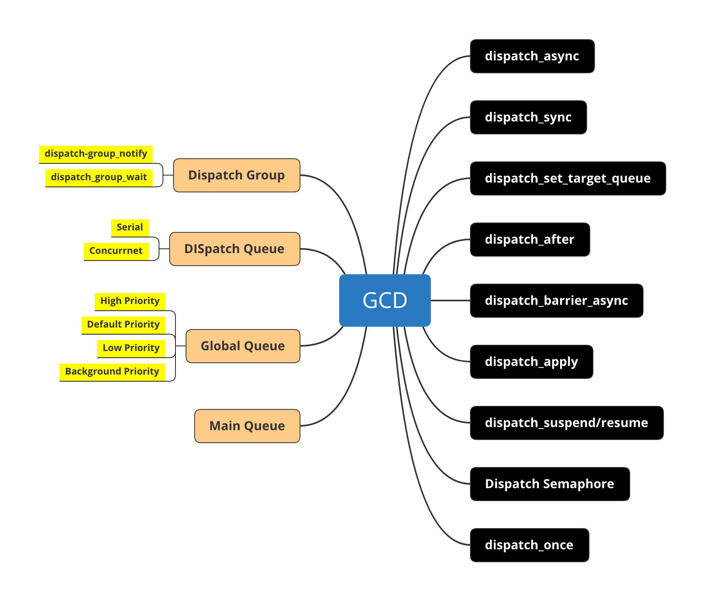

GCD
- 单核CPU上，单路径执行任务，即命令是一条一条执行。在同个时间段内，只能有一个任务在执行，等待完成后才能执行下一个任务
- 多核CPU上，多路径执行任务，即有多条路径在并行执行任务。不同的任务可以在不同的路径上同时执行
- 多路径执行任务就是我们说的多线程
- GCD 是多线程编程技术的通用接口，使用简洁的方式实现了复杂的多线程编程规范

GCD- Dispatch Group: 使用队列组管理队列
- dispatch_group_async：管理队列组任务
- dispatch_group_notify： 全部任务处理结束回调
dispatch_group_wait： 通过时间节点获取任务执行结果
dispatch_set_target_queue: 优先级变更，Serial Queue 并行时，可以指定某个* target——queue,打到串行的目的
dispatch_after：指定某个时间节点后执行任务
dispatch_barrier_async：通过barrier可以将并发任务分段执行
dispatch_apply： 指定任务次数
dispatch_suspend/resume：可以对队列任务挂起和恢复
Dispatch Semaphore：通过信号可以细粒度控制队列，排他控制
dispatch_once: 只执行一次的处理，主要是保证了线程安全
Queue
| 名称 | 种类 | 描述 |
|---|---|---|
| Main Queue | Serial | 主线程串行执行 |
| Global Queue (High) | Concurrent | 高优先级 |
| Global Queue (Default) | Concurrent | 默认优先级 |
| Global Queue (Low) | Concurrent | 高优先级 |
| Global Queue (Background) | Concurrent | 后台优先级 |
库
GCD 是基于IOS 和XNU 内核级别的实现，性能是最优秀的，GCD使用起来要比 pthreads 和 NSthread 更加方便。API 全部包含在libdispatch库中的C语言函数中， Dispatch Queue 使用 struct 和链表实现了队列 FIFO
|:————- |:—————:|
| libdispatch | Dispatch Queue |
|Libc Pthrads | prhread_workqueue|
| XNU 内核| Concurrent |
思考
进程和线程的区别
进程：App 启动时，会创建一个进程，并且分配虚拟地址空间，进程间相互独立
线程：建立在进程的基础上的，可以有多条线程，相互通信 每创建一个线程会在进车中分配虚拟空间（分配堆栈） ,队列大致分为串行队列 并发队列。串行队列不具有创建多个新线程的能力为什么UI要在主线程上更新
不恰当的使用多线程技术 会造成线程长驻，并发会造成过多线程被创建。线程的创建切换会涉及到内存的分配，寄存器的更新，上下文的切换，会对CPU造成过多开销，影响了整体的性能，线程长驻会占用有限的线程资源，浪费了多核优势。对线程的合理使用能起到好的效果，反过来不合理的造成糟糕的结果。出于性能与稳定性考虑，选择使用单一线程来保证这些基础库的稳定可用